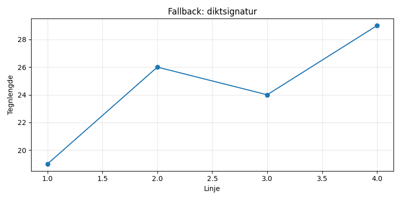

Støv i en bokhylle, et ekko fra en fjern drøm, et blått lys som danser, i lomma av et glemt øyeblikk.

import matplotlib.pyplot as plt
import numpy as np
# Dikt
dikt = """Støv i en bokhylle,
et ekko fra en fjern drøm,
et blått lys som danser,
i lomma av et glemt øyeblikk."""
# Generer noen data for visualisering
x = np.linspace(0, 2 * np.pi, 100)
y1 = np.sin(x)
y2 = np.cos(x)
y3 = np.exp(-x) * 0.5 # Blått lys som dør ut
# Plott dataene
plt.figure(figsize=(12, 6))
# Plot 1: Bokhylle og ekko
plt.subplot(2, 2, 1)
plt.plot(x, y1, label='Støv i en bokhylle')
plt.plot(x, y2, label='Ekko fra en fjern drøm')
plt.xlabel('Vinkel')
plt.ylabel('Amplitude')
plt.title('Bokhylle og Ekko')
plt.legend()
plt.grid(True)
# Plot 2: Blått lys
plt.subplot(2, 2, 2)
plt.plot(x, y3, label='Blått lys')
plt.xlabel('Tid')
plt.ylabel('Lysstyrke')
plt.title('Blått Lys som Danser')
plt.legend()
plt.grid(True)
# Plot 3: Glemte øyeblikk
plt.subplot(2, 2, 3)
plt.plot(x, y1 + y2, label='Glemte Øyeblikk')
plt.xlabel('Vinkel')
plt.ylabel('Amplitude')
plt.title('Glemte Øyeblikk')
plt.legend()
plt.grid(True)
# Plot 4: En enkel flate som representerer det generelle følelsen
plt.subplot(2, 2, 4)
z = x**2 + y3
plt.contourf(x, y, z, 20, cmap='viridis')
plt.colorbar(label='Z-verdi')
plt.xlabel('X')
plt.ylabel('Y')
plt.title('Følelse av Glemte Øyeblikk')
plt.grid(True)
plt.tight_layout()
plt.savefig(output_path)execution_ok=False fallback_used=True image_ok=True